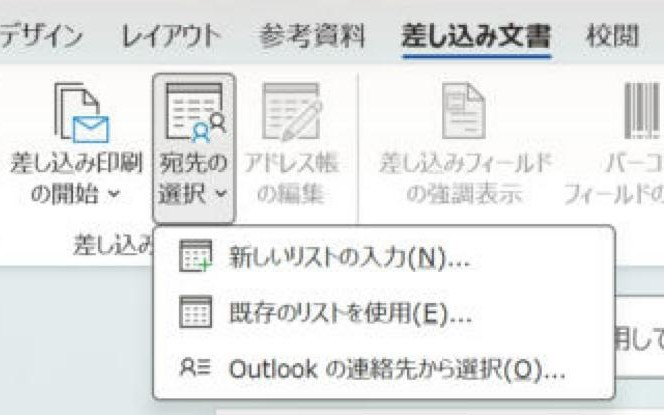
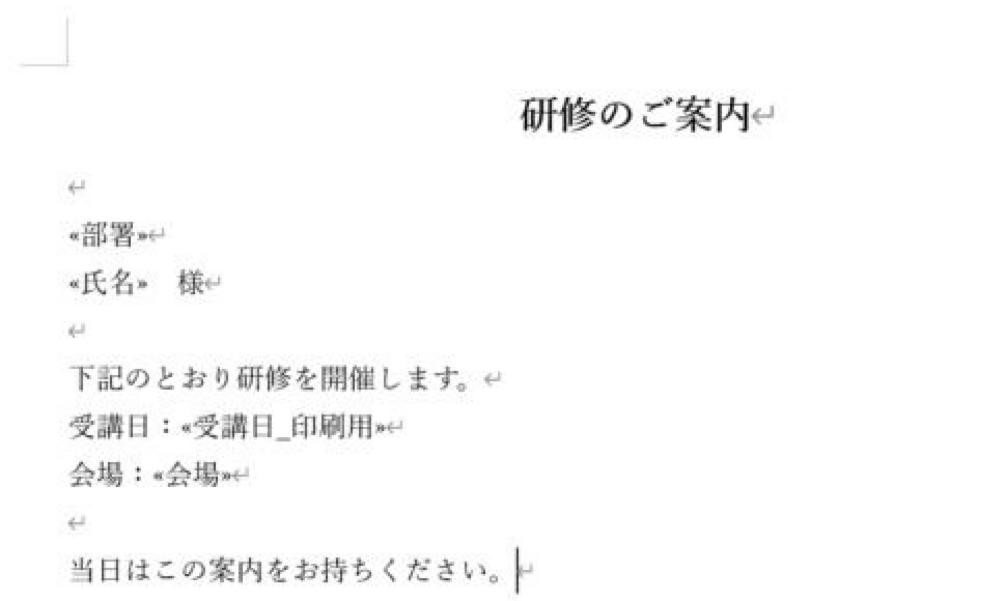
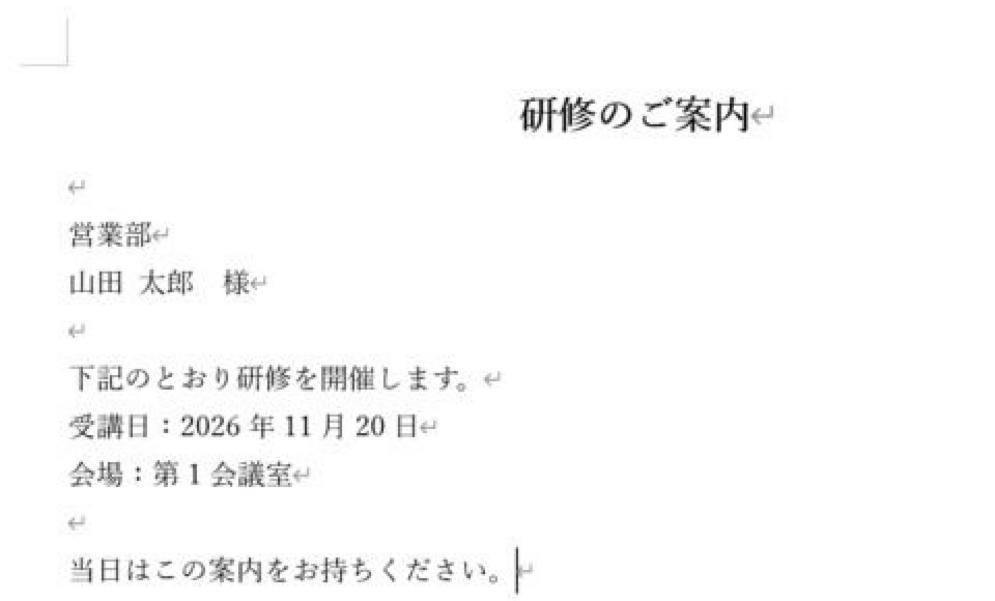
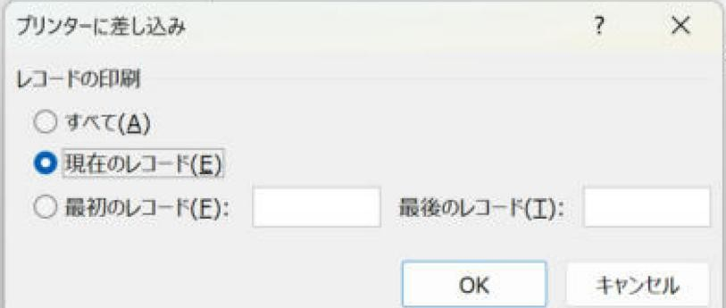
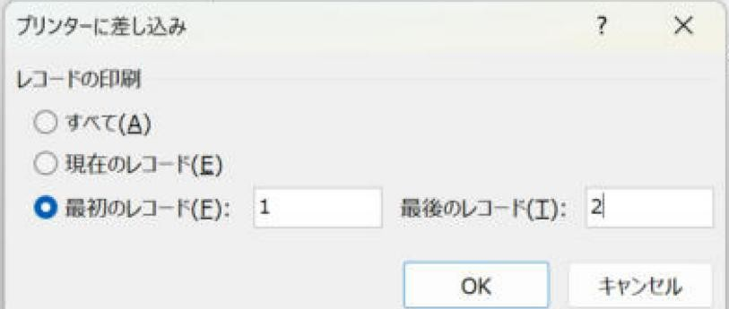

Word差し込み印刷（レター）の流れ：Excel名簿をつないで、絞り込んで、印刷するまで
Excelの名簿から、1人ずつ渡す案内文を作ります。
「レター」を選ぶ → Excel名簿をつなぐ → 列を挿入 → 対象者を絞る → プレビュー → 完成文書で確認して印刷、の順です。1人に1枚の案内文はこの流れで作れます。
入門（Lv.1）
- 名簿を接続
- 文面と列を配置
- 対象者を確認
- 全員分を完成
目次
💡 この記事でできること
Excelの名簿をWordの案内文や通知書に差し込み、必要な人だけに絞り込んで印刷するまでの流れを、最初から順番に説明します。
① Excelの名簿を整える → ② Wordで差し込みを開始（レター） → ③ 名簿をつなぐ → ④ 差し込みフィールドを入れる → ⑤ 印刷する人を絞り込む（フィルター・並べ替え・チェック） → ⑥ 結果のプレビュー → ⑦ 印刷（全員／一部／新規文書に書き出して確認）
画像はWindows版Word・Excelで架空の名簿を使って撮影しています。小さい文字は画像をクリックすると拡大できます。画面の名称や配置は、お使いの版で異なる場合があります。
宛名ラベルを作る場合は 宛名ラベルの基本手順 を見てください。③〜⑦の考え方は同じです。
「レター」は1人に1枚の文書を作る、いちばんよく使う種類です。1枚に続けて並べる「名簿」や、ラベル・封筒・はがきとの違いは レターと名簿の違いと使い分け を見てください。
準備と完成の見分け方
用意するのは、1行1人のExcel名簿と、1人分のWord文面です。最初は3人程度で練習します。
- Excelを保存し、Wordで「レター」を選んで接続します。
- 本文へ差し込みフィールドを挿入します。「«氏名»」などを手入力しません。
- 対象者を絞ったら、チェックが付いた人数を控えます。
- プレビューの矢印は1人分の表示を切り替える操作です。ここではまだ全員分の文書はできていません。
- 「個々のドキュメントの編集」→「すべて」で完成文書を出します。1ページのひな形で対象2人なら、完成は2ページかを見ます。
本文が長く1人分で2ページになる場合は、人数とページ数は一致しません。各人の先頭と最後の文が欠けていないか確認します。
手順1Excelの名簿を整える
Wordにつなぐ名簿は、1行目が見出し、2行目から1行1件の形にします。空白行・結合セル・メモ行は入れません。
| 社員番号 | 氏名 | 部署 | 受講日 | 受講日_印刷用 | 印刷対象 | 会場 |
|---|---|---|---|---|---|---|
| 1001 | 山田 太郎 | 営業部 | 2026/11/20 | 2026年11月20日 | ○ | 第1会議室 |
| 1002 | 佐藤 花子 | 総務部 | 2026/11/20 | 2026年11月20日 | 第1会議室 | |
| 1003 | 鈴木 一郎 | 営業部 | 2026/11/27 | 2026年11月27日 | ○ | 第2会議室 |
| 1004 | 高橋 美咲 | 経理部 | 2026/11/20 | 2026年11月20日 | ○ | 第1会議室 |
| 1005 | 田中 健 | 製造部 | 2026/11/27 | 2026年11月27日 | 第2会議室 | |
| 1006 | 伊藤 由美 | 総務部 | 2026/11/27 | 2026年11月27日 | ○ | 第2会議室 |
| 1007 | 渡辺 翔太 | 製造部 | 2026/11/20 | 2026年11月20日 | 第1会議室 | |
| 1008 | 中村 優子 | 営業部 | 2026/11/20 | 2026年11月20日 | 第1会議室 |
- 日付や郵便番号は、Excel側で、元の日付がD2にある場合は
=TEXT(D2,"yyyy年m月d日")のように印刷用の列を作ると、Wordで表示が崩れません（日付・金額の表示崩れを直す方法）。 - 「今回だけ送る人」が決まっている場合は、「印刷対象」列に○を付けておくと、手順5の絞り込みが1つの条件で済みます。
- 名簿を保存して、Excelを閉じておきます。開いたままだと、Wordからつなぐときにエラーや読み取り専用の確認が出ることがあります。
Excelで絞り込んで保存しても、Wordの差し込みには反映されません。絞り込みはWord側（手順5）で行うか、送る人だけの別シートを作ります。

=TEXT(D2,"yyyy年m月d日") で作った差し込み用の列です。「印刷対象」に○がある4名だけを、後の手順で選びます。 （画像をクリックで拡大）列の作り方の詳細は 失敗しにくいExcel住所録の作り方 にまとめています。
手順2Wordで差し込みを開始する
- Wordで案内文のひな形（差し込みたい場所以外を書いた文書）を開きます。
- 「差し込み文書」タブ → 「差し込み印刷の開始」 → 「レター」を選びます。
同じメニューの「段階的な差し込み印刷ウィザード」を選ぶと、画面右側の案内に沿って同じ手順を進めることもできます。

手順3Excelの名簿をつなぐ
- 「宛先の選択」 → 「既存のリストを使用」を選びます。
- 手順1のExcelファイルを選んで「開く」を押します。
- 「テーブルの選択」で名簿のシート（例：
名簿$）を選び、「先頭行をタイトル行として使用する」にチェックが入っていることを確認して「OK」を押します。


手順4差し込みフィールドを入れる
- 文書の中で、名前を入れたい位置をクリックします。
- 「差し込みフィールドの挿入」の▼から「氏名」を選びます。文書に
«氏名»と入ります。 - 同じようにして「部署」「受講日_印刷用」などを入れます。「様」や「殿」などの敬称は、フィールドの後ろに普通に入力します。

部署によって文面を変えたい場合は、「ルール」 → 「If…Then…Else」で「部署が営業部なら○○、それ以外なら△△」のような分岐も入れられます。

手順5印刷する人を絞り込む（フィルター・並べ替え）
「アドレス帳の編集」を押すと、「差し込み印刷の宛先」の画面が開きます。ここで、印刷する人を選びます。
条件の種類・AND／ORの組み合わせ・Excel側で対象者を決める方法まで詳しく知りたい場合は 必要な人だけ印刷する2つの方法 を見てください。

方法A：チェックを外す（少人数のとき）
一覧の左のチェックボックスを外した人は、差し込みの対象から外れます。数人だけ外したいときに手早い方法です。
方法B：フィルターで条件を指定する（おすすめ）
- 画面下の「アドレス帳の絞り込み」から「フィルター」を選びます。
- 「レコードのフィルター」タブで、フィールド・条件・比較対象を指定します。
- 例1：「印刷対象」「が値と等しい」「○」
- 例2：「部署」「が値と等しい」「営業部」
- 例3：「受講日_印刷用」「が値を含む」「11月20日」
- 条件を2つ以上使う場合は、2行目の左端で「AND」（両方に当てはまる）か「OR」（どちらかに当てはまる）を選びます。
- 「OK」を押すと、一覧が条件に合う人だけになります。

並べ替え
同じ画面の「レコードの並べ替え」タブで、印刷する順番を決められます（例：部署 → 社員番号の順）。配る順番に並べておくと、印刷後の仕分けが楽になります。

条件を外すとき
フィルターの画面で「すべてクリア」を押すと、絞り込みがなくなり全員が対象に戻ります。
「条件」の欄の表示名（「が値と等しい」「が値を含む」など）は、環境により結果が異なる場合があります。「が値と等しい」は撮影した画面で確認しています。
毎回「部署が○○で、日付が△△で…」と条件を組み立てると、設定ミスが起きやすくなります。Excel側で○を付けてWord側は「印刷対象＝○」だけにしておくと、誰が見ても対象者が分かり、引き継ぎもしやすくなります。
手順6結果のプレビューで確認する
- 「結果のプレビュー」を押すと、
«氏名»が実際の名前に変わります。 - 左右の矢印で1件ずつ切り替え、件数が絞り込みどおりになっているか、表示が崩れていないかを確認します。
- 特定の人を探すときは「宛先の検索」を使います。

撮影した例では、右矢印で2件目へ進むと鈴木さん・2026年11月27日・第2会議室に切り替わりました。氏名だけでなく、日付と会場も一緒に確認します。
日付が「11/20/2026」のようになる場合は、手順1の印刷用の列を差し込みます。
手順7印刷する
「完了と差し込み」から、次のどちらかを選びます。

7-1. 個々のドキュメントの編集（確認してから印刷する／おすすめ）
- 「完了と差し込み」 → 「個々のドキュメントの編集」 → 「すべて」 → 「OK」。
- 差し込み済みの文書が新しい文書（「レター1」など）として開きます。この1ページのひな形では、1人1ページで並びます。
- 全体をスクロールして確認し、必要なら1人分だけ手で直します。
- Ctrl+P で印刷します。PDFにして配る場合は「ファイル → 名前を付けて保存」でPDFを選びます。


この新しい文書は、差し込み元の名簿とはつながっていません。印刷の記録として保存しておくと、「誰に何を送ったか」を後から確認できます（個人情報を含むので、保存場所に注意してください）。
7-2. 文書の印刷（そのまま印刷する）
- 「完了と差し込み」 → 「文書の印刷」を選びます。
- 印刷する範囲を選びます。
- すべて：絞り込んだ全員分
- 現在のレコード：プレビューで表示中の1人分（試し印刷に便利）
- 最初のレコード／最後のレコード：「1」から「10」のように範囲を指定
- 「OK」を押すと、プリンターの画面が開きます。

「最初のレコード～最後のレコード」の番号が、絞り込み後の何件目を指すかは、環境により結果が異なる場合があります。プレビューの番号で確認してから印刷してください。

次回また使うとき
- 差し込みを設定したWord文書（ひな形）を保存しておくと、名簿とのつながりとフィルターの設定も一緒に保存されます。
- 次に開くと「この文書を開くと、次の SQL コマンドが実行されます」と表示されます。名簿のつながりを使う場合は「はい」を選びます。
- Excelの名簿を別の場所へ移したり名前を変えたりすると、つながりが切れます。その場合は手順3の「宛先の選択」からつなぎ直します。
- 前回のフィルターが残っていないか、印刷前に「アドレス帳の編集」で確認します。
よくあるつまずき
| 症状 | 確認すること |
|---|---|
| Excelで絞り込んだのに全員分が出る | ExcelのオートフィルターはWordに反映されません。Wordの「アドレス帳の編集 → フィルター」で絞り込みます。 |
| フィルターしたのに0件になる | 比較対象の文字が一字一句同じか（全角・半角、前後の空白）を確認します。「が値と等しい」で合わないときは、「含む」の条件（表示例：が値を含む）を試します。 |
| 日付や金額の表示がおかしい | Excel側の印刷用の列（TEXT関数）を差し込みます。表示崩れの直し方 |
| 空白のページや空白の人が出る | 名簿の途中に空白行がないか確認します。フィルターに「氏名」「空白でない」を追加しても除けます。 |
| 名簿が開けない・選べない | Excelの名簿を閉じてから、もう一度「宛先の選択」を行います。 |
| 長い住所や会社名がはみ出す | テキストボックスで折り返す方法を使います。 |
個人情報の扱い
- 名簿・差し込み後の文書・PDFには個人情報が含まれます。保存場所とアクセスできる人を社内ルールに合わせて決めます。
- 印刷物の取り忘れがないよう、印刷枚数と対象人数が合っているか確認します。
画面はWindows版の例です。版によって名称や配置が異なる場合は、同じ操作名を探してください。